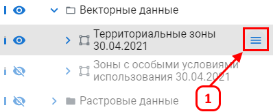
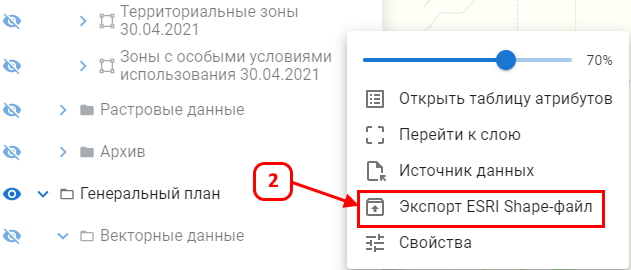
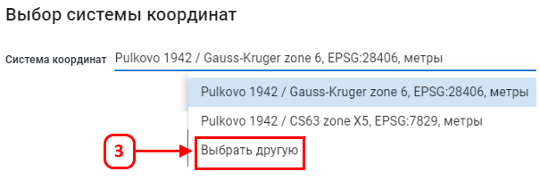
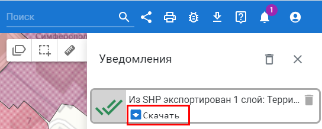

Экспорт ESRI Shape-файла
Функция позволяет экспортировать векторные данные из платформы в популярный формат SHP для обмена с другими системами.
Для экспорта данных слоя в Shapefile выберите нужный слой в вашем проекте.
Откройте меню слоя (1).

Нажмите кнопку (2).

Укажите систему координат.

В результате выполненных шагов открылась форма «Уведомления» из которой можно скачать zip-архив, в котором находится Shape-файл.
